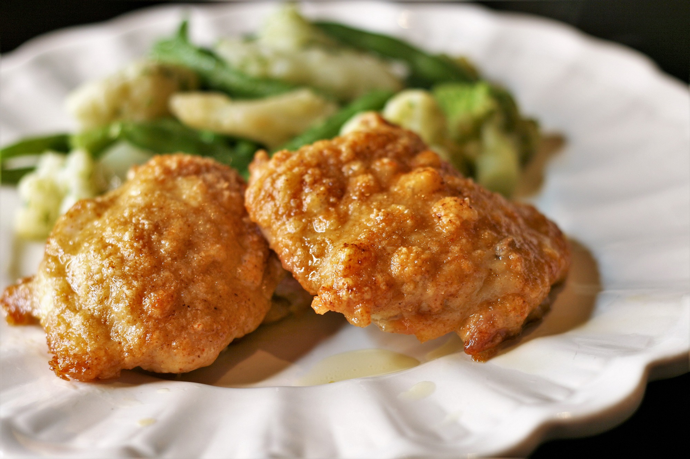

Baked Parmesan Chicken

Ingredients
- 1/3 cup olive oil
- 1 cup grated Parmesan cheese
- 1 teaspoon celery salt
- 1 teaspoon cayenne pepper
- 1/2 teaspoon garlic powder
- 8 (5 ounce) boneless, skinless chicken thighs
Instructions
- Preheat the oven to 375 degrees F. Line a pan with foil.
- Put olive oil in a bowl. Mix dry ingredients together in another bowl
- Cut chicken thighs in half. Dip each piece in olive oil, allowing for excess oil to
run off. Then press chicken into Parmesan mixture to achieve an even coating.
- Place chicken on pan and bake for 25 minutes until an internal temperature of at least 165 degrees F is reached.